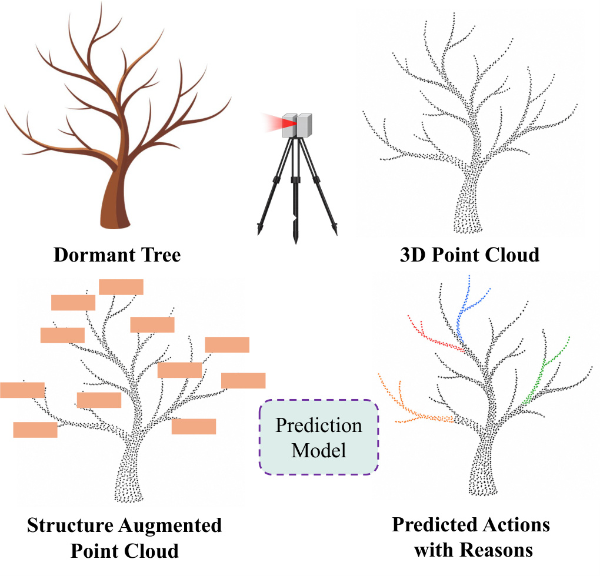
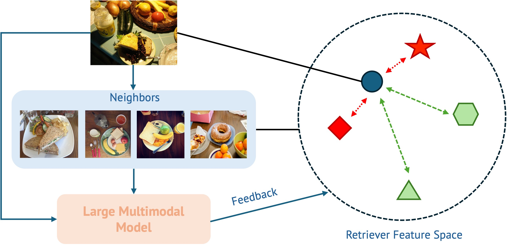
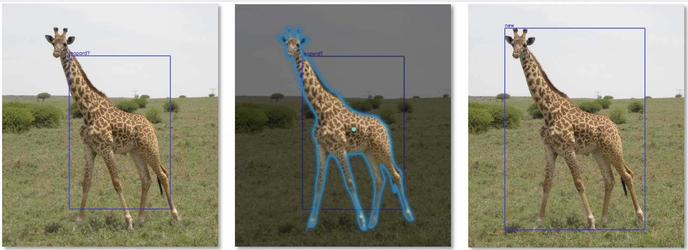
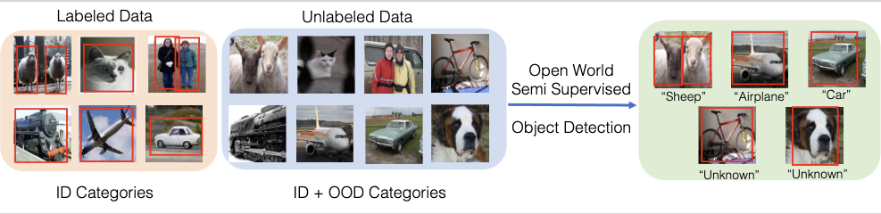
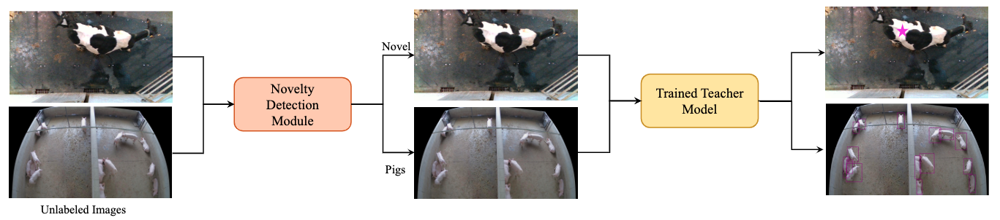
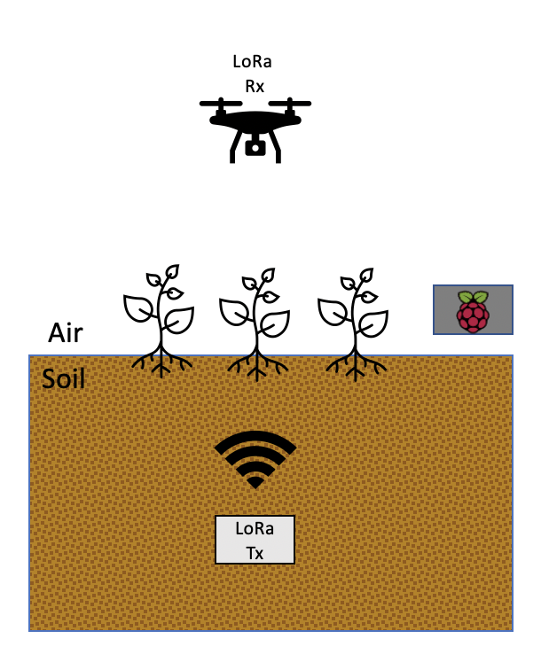
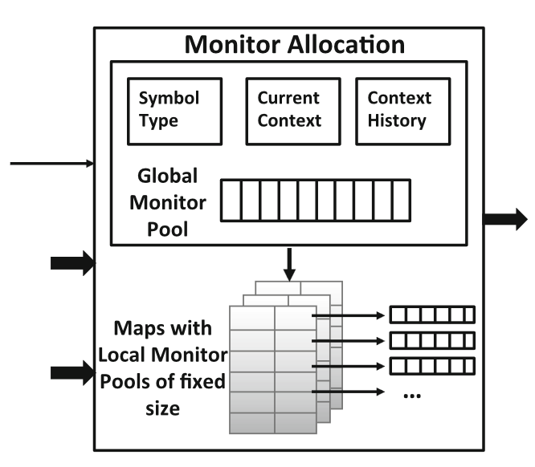

About
I am a final-year Ph.D. candidate in Computer Science at the University of Illinois Urbana-Champaign, co-advised by Professors Vikram Adve and Yu-Xiong Wang. I work on visual and multimodal learning for dynamic real-world environments. My research explores how AI systems can adapt to new categories and environments, transfer what they learn across models and tasks, and ground their predictions in reliable external knowledge.
I am particularly interested in building systems that move beyond closed-world benchmarks and remain useful when deployed in the real world. My work spans multimodal foundation models, open-world detection, 3D perception, and knowledge-grounded reasoning, with applications ranging from agricultural robotics and wildlife understanding to retrieval-augmented multimodal models.
Before starting my Ph.D., I spent four years in the industry as a software engineer at Microsoft, where I worked on large-scale production systems as part of the Azure Backup team.
Experience
Visiting Scholar
University of Bonn
Advisor: Prof. Cyrill Stachniss
Developed a structure-augmented 3D perception framework for robotic pruning, along with a large-scale annotated LiDAR dataset of real orchard trees.
Research Intern, Research for Industry
Microsoft Research
Mentors: Dr. Emre Kıcıman and Dr. Ranveer Chandra
Built a learnable retrieval framework that adapts large multimodal models to new tasks without fine-tuning, transferring across models including GPT-4o and Gemini.
Software Engineering Intern, Amazon Care
Amazon · Seattle, WA
Built a serverless publisher–subscriber system on AWS Lambda for Amazon Care’s Payments service.
Software Engineer I & II, Azure Backup
Microsoft · Hyderabad, India
Shipped cross-region disaster recovery for Azure VM, SQL, and SAP HANA backups to general availability, and built the analytics pipeline behind Azure Backup’s monitoring dashboards.
Publications


Learning to Detect Novel Animals with SAM in the Wild
International Journal of Computer Vision (IJCV), 2024
Generalized Open-World Semi-Supervised Object Detection
NeurIPS Workshop on Open-World Agents, 2024
From N to N+1: Learning to Detect Novel Animals with SAM
CVPR Workshop on Computer Vision for Animal Behavior Tracking and Modeling, 2023
smol: Sensing Soil Moisture using LoRa
MobiCom Workshop on No Power and Low Power Internet of Things, 2021
METIS: Resource and Context-Aware Monitoring of Finite State Properties
International Conference on Runtime Verification (RV), 2018 · Best Paper Award* indicates equal contribution.
Awards
-
Siebel Scholar, Class of 2022
Awarded $35,000 for academic excellence and demonstrated leadership.
-
CJ & Hina Desai Computer Science Fellowship, 2022–2023
Awarded to outstanding female graduate students in CS.
-
Best Paper Award, Runtime Verification 2018
For METIS: Resource and Context-Aware Monitoring of Finite State Properties.
Service
-
Co-organizer, ICRA 2026 Workshop
-
Co-organizer & Area Chair, CVPR 2025 Workshop
CV4Animals: Computer Vision for Animal Behavior Tracking and Modeling
-
Reviewer
CVPR 2024–2026, ECCV 2024, AAAI 2025
Teaching
-
Teaching Assistant
Computer Architecture (CS 233)
Aug – Dec 2026
-
Lead Teaching Assistant
Data Visualization (CS 416)
May – Aug 2026
-
Teaching Assistant
Introduction to Computer Science (CS 125)
Aug – Dec 2020